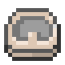
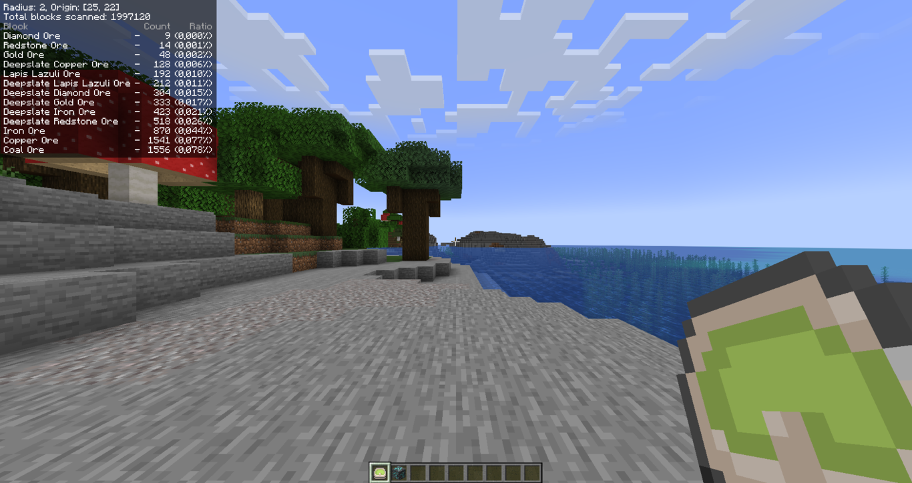

Локатор руд
Локатор руд — це надзвичайно корисний предмет, який може вимірювати кількість будь-якої руди, прихованої у заданому радіусі навколо гравця. Його можна знайти лише в Малих порожнистих пагорбах, і це, безперечно, один із найкорисніших інструментів, який хотів би мати будь-який затятий дослідник печер. А уяви ще поєднати його з Рудним магнітом та Мапою руд!
- Тип: інструмент
- Міцність: -
- Відновлюваний: ні
- Складається: так (64)
- ID: twilightforest:ore_meter

Після натискання правої кнопки миші Локатор руд почне пошук руд у межах бажаного радіуса чанків, блимаючи зеленим кольором, блимаючи під час роботи. Процес пошуку працює як рух в усіх основних напрямках від центру чанка, по одному чанку за раз. Щоб змінити радіус пошуку, потрібно натиснути праву кнопку миші у повітрі під час присідання. За замовчуванням радіус пошуку становить 1 чанк; можна збільшити до 2 чанків, або зменшити до 0 (поточний чанк, де стоїть гравець).

Також Локатор може шукати конкретний блок. Виходить так, що за замовчуванням він налаштований лише на пошук об'єктів із тегом #forge:ores, що дозволяє шукати майже будь-яку руду, як і випливає з назви. Однак, якщо натиснути праву кнопку миші під час присідання навівшись мишкою на певний блок (такий, що можна знайти локатором, тобто із тегом ore_meter_targetable), локатор почне шукати саме цей блок в заданому радіусі чанків.
Результати пошуку відображаються у верхньому лівому куті екрана, і їх можна очистити, натиснувши ліву кнопку миші у повітрі (це також скидає налаштування пошуку конкретного блока). Зверни увагу, що коли натискаєш праву кнопку миші, щоб змінити радіус пошуку чи налаштовуєш локатор на пошук певного блока, зміни відображаються текстом над готбаром.
Також зазначу, що в останній версії моду на час написання цієї сторінки (v4.8.3345, 22.03.26) український переклад відображається некоректно у результатах пошуку у верхньому лівому куті екрана.